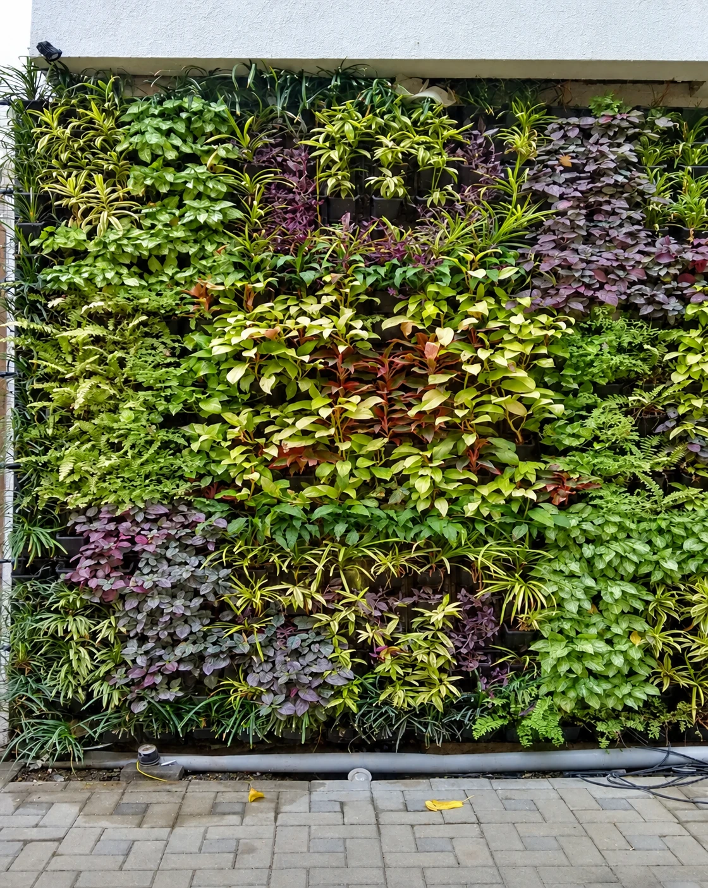
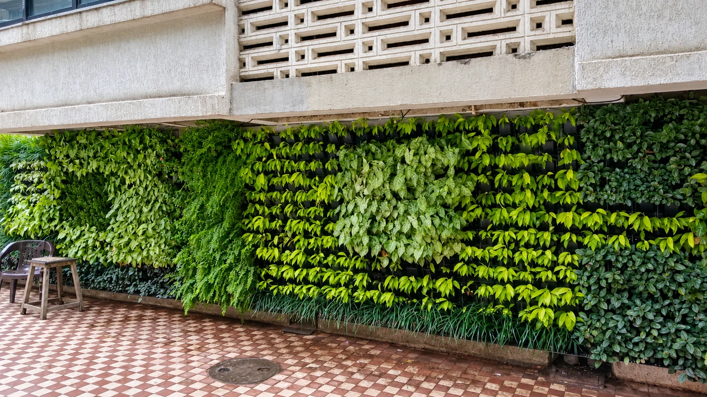
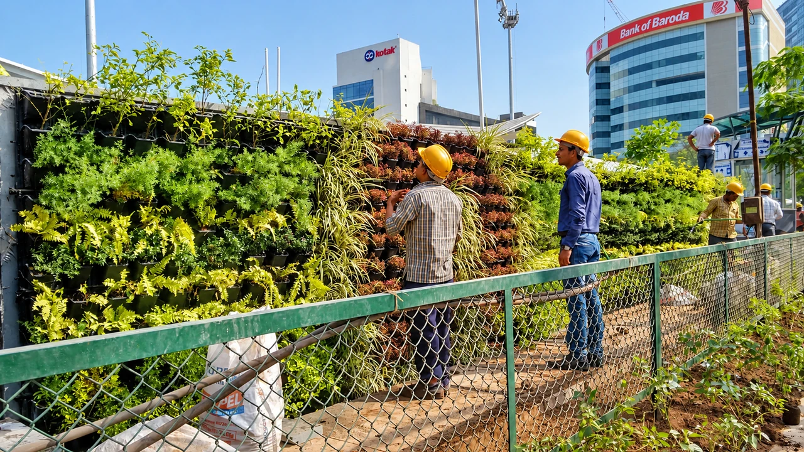
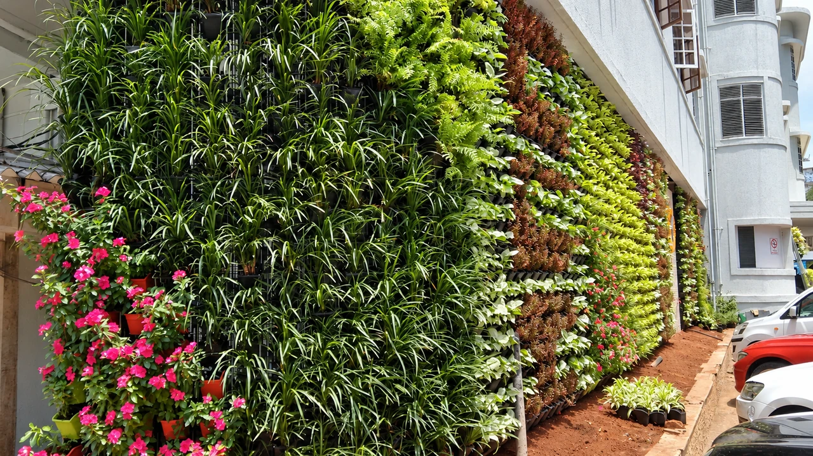
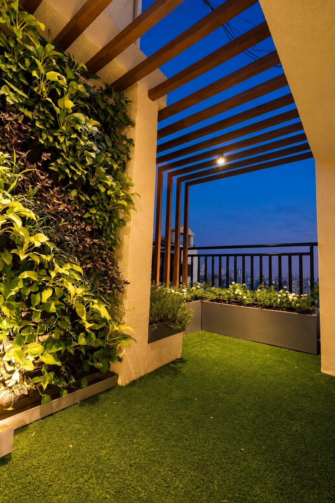
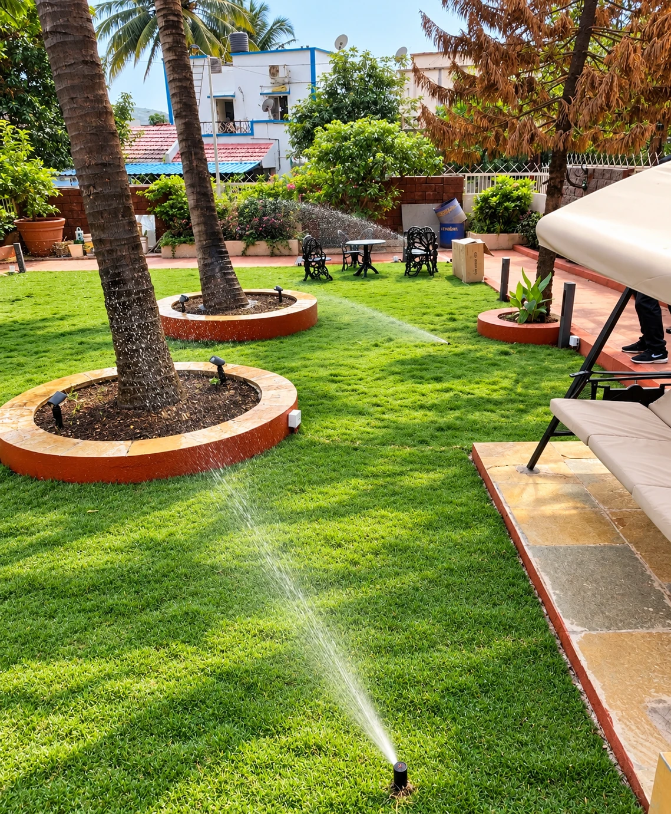

Vertical
Gardens
Green walls that bring planting to facades and compact spaces.


2014Established, Mumbai
VERTICAL GARDENS
Greenery That Grows Upward
Vertical gardens offer an effective way to introduce greenery into spaces where horizontal landscape area is limited. 7 Petals designs and installs green walls for residential, commercial and institutional buildings, indoors and outdoors.
A vertical garden, also called a green wall or living wall, grows plants on a specially designed structure. We focus on appropriate plant selection, structural requirements, irrigation and maintenance so the wall stays healthy and vibrant.
Our vertical garden solutions
- Vertical garden design & planning
- Living wall installation
- Modular green wall systems
- Indoor vertical gardens
- Outdoor green walls
- Office & corporate green walls
- Residential & balcony green walls
- Decorative plant walls
- Irrigation system integration
- Annual maintenance services
BENEFITS
Benefits of a
vertical garden
Enhances visual appeal
Plain walls become living features that create a welcoming atmosphere.
Improves air quality
Plants filter pollutants, absorb carbon dioxide and release oxygen.
Reduces heat
Planting acts as natural insulation, reducing heat absorbed by building walls.
Optimises limited space
Greenery without using valuable floor area.
Reduces noise
Dense vegetation helps absorb sound around offices, hotels and residences.
Supports sustainable living
Living walls support biodiversity and eco-friendly building practice.
PROCESS
Our
process
01
Site evaluation
Light, structure and environmental conditions are assessed.
02
Customised design
A design that suits the architecture and the available space.
03
Plant selection
Species chosen for light, water needs, climate and growth habit.
04
Installation
Installed safely with attention to detail and irrigation.
05
Maintenance & care
Irrigation monitoring, pruning, fertilisation and plant replacement as required.
Where vertical gardens work
- Residential homes & balconies
- Corporate offices
- Commercial buildings & malls
- Hotels, restaurants & cafés
- Educational institutions
- Hospitals
- Industrial campuses
- Public spaces & government buildings
PHOTO GALLERY
Vertical Gardens
in the Field



EXPLORE MORE
Other
Services

